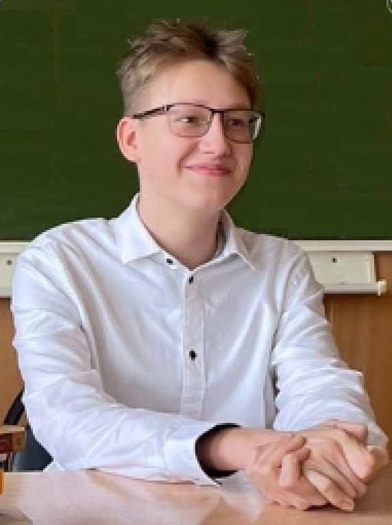

Родион Лопатин
Привет! Меня зовут Лопатин Родион, и я занимаюсь программированием больше года.
Навыки (Soft skills)
- Самостоятельность
- Креативность
- Умение работать в команде
Навыки (Hard Skills)
- JavaScript
- Python
- HTML
- CSS
- Git
Проекты
-
Сайт с футбольной тематикой
https://rodionlopatin9.github.io/sport/ -
Сайт, посвященный футбольному клубу «Ротор»
https://rodionlopatin9.github.io/site_rotora/index.html -
Сайт «Удивительные факты о животных»
https://rodionlopatin9.github.io/animal_site